실내건축기사(구) (2017-05-07 기출문제)
1과목: 실내디자인론
1. 주택에서 부엌의 일부에 간단한 식탁을 설치하거나 식당과 부엌을 한 공간에 구성한 형식은?
- 독립형
- 다이닝 키친
- 리빙 다이닝
- 다이닝 테라스
(정답률: 89%)

2. 질감에 관한 설명으로 옳지 않은 것은?
- 모든 물체는 일정한 질감을 갖는다.
- 시각적으로만 지각되는 재료 표면상의 특징이다.
- 매끄러운 재료는 빛을 많이 반사하므로 가볍고 환한 느낌을 준다.
- 효과적인 질감 표현을 위해서는 색채와 조명을 동시에 고려해야 한다.
(정답률: 77%)
3. 다음 중 단독주택의 거실 크기를 결정하는 요소와 가장 거리가 먼 것은?
- 가족구성
- 생활방식
- 거실의 조도
- 주택의 규모
(정답률: 82%)
4. 주거공간을 주행동에 따라 개인공간, 작업공간, 사회적 공간으로 구분할 때, 다음 중 개인공간에 속하는 것은?
- 부엌
- 서재
- 창고
- 식당
(정답률: 91%)
5. 의자와 디자이너의 연결이 옳지 않은 것은?
- 파이미오 의자 - 알바 알토
- 레드 블루 의자 - 미하엘 토넷
- 체스카 의자 - 마르셀 브로이어
- 바실리 의자 - 마르셀 브로이어
(정답률: 73%)
6. 쉐이드라고도 하며, 창 이외에 간막이 스크린으로도 효과적으로 사용할 수 있는 것은?
- 롤 블라인드
- 로만 블라인드
- 버티컬 블라인드
- 베네시안 블라인드
(정답률: 84%)
7. 긴 직사각형 또는 다각형의 각 전시실이 연속적으로 동선을 형성하고 있으며 비교적 소규모 대지에서 효율적인 전시공간의 순회 유형은?
- 중정 형식
- 중앙홀 형식
- 연속순회 형식
- 갤러리 및 복도형식
(정답률: 81%)
8. 실내계획 중 치수계획에 관한 설명으로 옳지 않은 것은?
- 치수계획은 인간의 심리적, 정서적 반응을 유발시킨다.
- 복도의 폭과 넓이는 통행인의 수와 관계있지만 보행 형태를 규정하지 않는다.
- 최적치수를 구하는 방법으로는 α를 조정치수라 할때, 최소치 +α, 최대치 -α, 목표치 ±α 가 있다.
- 치수계획은 생활과 물품, 공간과의 적정한 상호 관계를 만족시키는 치수체계를 구하는 과정이다.
(정답률: 67%)
9. 창문 전체를 커튼으로 처리하지 않고 반 정도만 친 형태를 갖는 커튼의 종류는?
- 새시 커튼
- 글라스 커튼
- 드로우 커튼
- 드레퍼리 커튼
(정답률: 75%)
10. 측창에 관한 설명으로 옳지 않은 것은?
- 천창에 비해 채광량이 많다.
- 천창에 비해 비막이에 유리하다.
- 편측창의 경우 실내 조도분포가 불균일하다.
- 근린의 상황에 의한 채광 방해의 우려가 있다.
(정답률: 86%)
11. 사무소 건축의 코어에 관한 설명으로 옳은 것은?
- 양단코어형은 2방향 피난에 이상적인 관계로 방재상유리하다.
- 편심코어형은 기준층 바닥면적이 작은 경우에 적용이 불가능하다.
- 독립코어형은 고층, 초고층의 대규모 사무소 건축에 주로 사용된다.
- 중심코어형은 외코어라고도 하며 코어를 업무 공간에서 별도로 분리시킨 유형이다.
(정답률: 79%)
12. 백화점의 에스컬레이터 배치 유형 중 교차식 배치에 관한 설명으로 옳은 것은?
- 연속적으로 승강할 수 없다.
- 점유면적이 다른 유형에 비해 작다.
- 고객의 시야가 다른 유형에 비해 넓다
- 고객의 시선이 1방향으로 한정된다는 단점이 있다.
(정답률: 61%)
13. 실내공간 구성요소 중 벽(wall)에 관한 설명으로 옳지 않은 것은?
- 공간을 에워싸는 수직적 요소이다.
- 다른 요소에 비해 조형적으로 가장 자유롭다.
- 외부세계에 대한 침입 방어의 기능을 갖는다.
- 가구, 조명 등 실내에 놓여지는 설치물에 대해 배경적 요소가 된다.
(정답률: 87%)
14. 특정한 사용목적이나 많은 물품을 수납하기 위해 건축화된 가구를 의미하는 것은?
- 유닛가구
- 모듈러가구
- 붙박이가구
- 수납용가구
(정답률: 68%)
15. 사선이 주는 느낌과 가장 관계가 먼 것은?
- 생동감
- 안정감
- 운동감
- 약동감
(정답률: 90%)
16. 다음 중 실내공간의 평면계획에서 가장 우선적으로 고려해야 할 것은?
- 마감재료
- 공간의 동선
- 공간의 색채
- 공간의 환기
(정답률: 92%)
17. 비대칭 균형에 관한 설명으로 옳은 것은?
- 완고하거나 여유, 변화가 없이 엄격, 경직될 수 있다.
- 가장 완전한 균형의 상태로 공간에 질서를 주기가 용이하다.
- 자연스러우며 풍부한 개성을 표현할 수 있어 능동의 균형이라고도 한다.
- 형이 축을 중심으로 서로 대칭적인 관계로 구성되어 있는 경우를 말한다.
(정답률: 80%)
18. 사무소 건축의 실단위계획 중 개실시스템에 관한 설명으로 옳지 않은 것은?
- 독립성 확보가 용이하다.
- 공간의 길이에 변화를 줄 수 있다.
- 연속된 복도 때문에 공간의 깊이에 변화를 줄 수 없다.
- 전면적을 유효하게 이용할 수 있어 공간절약상 유리 하다.
(정답률: 55%)
19. 다음 설명에 알맞은 디자인 원리는?
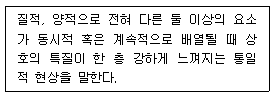
- 균형
- 대비
- 조화
- 리듬
(정답률: 75%)
20. 업무공간에 칸막이(partition)를 계획할 때 주의 할 사항으로 옳지 않은 것은?
- 흡음을 고려한 마감재를 사용한다.
- 기둥과 보의 위치를 고려해야 한다.
- 창의 중간에 배치되는 것을 피한다.
- 설비적인 분포에 차별화를 두어야 한다.
(정답률: 80%)
2과목: 색채학
21. 다음 중 회전 혼합과 관계가 없는 것은?
- 가법 혼합
- 색광 혼합
- 색료 혼합
- 중간 혼합
(정답률: 50%)
22. 색광을 표시하는 표색계로 심리적이고 물리적인 빛의 혼색 실험결과에 그 기초를 두는 것은?
- 현색계
- 지각색계
- 혼색계
- 물체색계
(정답률: 79%)
23. 오스트발트(Ostwald) 표색계에 관한 설명 중 틀린 것은?
- 색의 합리적인 계획보다 색채계획이나 색채조화에 장점을 가지고 있다.
- 색상환은 24색상을 원칙으로 한다.
- 최상단은 검정, 최하단은 하양으로 하여 정삼각형을 만들었다.
- W+B+C=100이라는 이론이다.
(정답률: 70%)
24. 단색광과 파장의 범위가 틀리게 짝지어진 것은?
- 파랑 : 450~500nm
- 빨강 : 360~450nm
- 초록 : 500~570nm
- 노랑 : 570~590nm
(정답률: 76%)
25. 디자인의 대상이나 용도에 적합한 배색을 적용하고 기능적으로나 심미적으로 효과적인 배색효과를 얻을 수 있도록 미리 설계하는 것은?
- 색채조절
- 색채관리
- 색채응용
- 색채계획
(정답률: 90%)
26. 다음 중 강함, 동적임, 화려함 등을 느낄 수 있는 배색은?
- 동일 색상의 배색
- 유사 색상의 배색
- 반대 색상의 배색
- 포 까마이외 배색
(정답률: 81%)
27. 다음은 빨강, 노랑, 초록, 파랑의 분광분포 곡선이다. 노랑(Yellow)의 분광분포 곡선은?
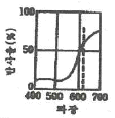
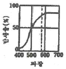
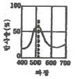
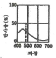
(정답률: 70%)
28. 무거운 상품을 가볍게 보이기 위해 포장하려 한다면 색의 어떤 속성을 조정해야 하냐?
- 색상
- 명도
- 채도
- 색도
(정답률: 76%)
29. 다음 중 가장 가벼운 느낌을 주는 배색은?
- 초록 –검정
- 주황 –노량
- 빨강 –파랑
- 청록 –초록
(정답률: 87%)
30. 물체의 색을 지각하는 것은 빛의 어떤 성질과 가장 관계가 깊은가?
- 확산
- 투과
- 입사
- 반사
(정답률: 85%)
31. 비렌(Birren)의 색과 형의 연결로 틀린 것은?
- 빨강 –정사각형
- 노랑 –삼각형
- 파랑 –오각형
- 주황 –직사각형
(정답률: 72%)
32. 문·스펜서의 면적효과에 관한 설명 중 틀린 것은?
- N5 순응점을 중심으로 한다.
- 균형점(balance point)에 의해서 배색의 심리적 효과가 결정된다.
- 순응점을 중심으로 높은 채도의 색은 넓게 배색하는 것이 조화롭다.
- 순응점으로부터 지정된 색까지의 입체적 거리는 스칼라 모멘트이다.
(정답률: 72%)
33. 다음 중 난색계의 특징으로 틀린 것은?
- 따뜻함
- 진출색
- 활동색
- 차분함
(정답률: 81%)
34. 다음 중 색광의 표시법과 관련 있는 것은?
- Munsell 표색법
- Ostwald 표색법
- CIE 표색법
- NCS 표색법
(정답률: 68%)
35. 횃불놀이, TV나 영화 등에서 나타나는 색의 현상은?
- 정의 잔상
- 부의 잔상
- 연변 대비
- 색상 동화
(정답률: 76%)
36. CIE 색도도에 관한 설명 중 틀린 것은?
- 빛의 혼색실험에 기초한 것이다.
- 백색광은 색도도 중앙에 위치한다.
- 순수파장의 색은 바깥 둘레에 위치한다.
- 색도도의 모양은 타원형으로 되어 있다.
(정답률: 63%)
37. 저드(D. B. Judd)의 색채조화론 중 다음 내용이 설명 하는 것은?
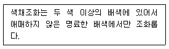
- 질서의 원리
- 비모호성의 원리
- 유사의 원리
- 친근성의 원리
(정답률: 81%)
38. 아파트 건축물의 색채 기획 시 고려해야 할 사항이 아닌 것은?
- 개인적인 기호에 의하지 않고 객관성이 있어야 한다.
- 주변에서 가장 부각될 수 있게 독특한 색채를 사용한다.
- 전체적으로 질서가 있어야 하며 적당한 변화가 있어야 한다.
- 주거민을 위한 편안한 색채 디자인이 되어야 한다.
(정답률: 88%)
39. 컬러인화사진은 대부분 어떤 혼색방법을 이용한 것인가?
- 가법혼색
- 평균혼색
- 감법혼색
- 색광혼색
(정답률: 69%)
40. 비트(bit)에 대한 내용이 아닌 것은?
- 2의 1승인 픽셀(pixel)은 1비트(bit) 픽셀(pixel)이다.
- 더 많은 비트(bit)를 시스템에 추가하면 할수록 가능한 조합의 수가 늘어나 생성되는 컬러의 수가 증가됨을 뜻한다.
- 24비트(bit) 컬러는 사람의 육안으로 볼 수 있는 전체 컬러를 망라하지는 못하지만 거의 그에 가깝게 표현 할 수 있다.
- 디지털 컬러에서 각 픽셀(pixel)은 CMYK의 조합으로 표현된다.
(정답률: 64%)
3과목: 인간공학
41. 제품디자인에 인간공학을 적용할 때 필요한 일반적인 정보가 아닌 것은?
- 표준(standards)
- 체크리스트(checklist)
- 인체측정치(anthropometric data)
- 기술사양(technical specification)
(정답률: 77%)
42. 표시장치에 있어 청각 표시장치가 시각 표시장치보다 더 적합한 경우는?
- 정보가 복잡하고 긴 경우
- 정보가 후에 재참조되는 경우
- 정보가 시간적인 사상을 다루는 경우
- 직무상 수신자가 한 곳에 머무르는 경우
(정답률: 67%)
43. 여러 가지의 음이 귀에 들어올 때 한 음에 의하여 다른 음이 들리지 않는 것을 무엇이라 하는가?
- 은폐현상
- 가현작용
- 절음현상
- 방음작용
(정답률: 63%)
44. 진동이 인간의 성능에 미치는 영향에 관한 설명으로 틀린 것은?
- 진동은 시성능을 저하시킨다.
- 진동은 추적작업의 성능을 저하시킨다.
- 진동은 인간의 운동성능에는 별다른 영향을 주지 않는다.
- 진동은 주로 중앙 신경계의 처리과정과 관련되는 과업의 성능에는 비교적 영향을 덜 받는다.
(정답률: 74%)
45. 소음이 인간에게 주는 영향으로 가장 거리가 먼 것은?
- 대화 방해
- 정서적 영향
- 맥박수 감소
- 작업능률의 저하
(정답률: 86%)
46. 색채가 가지는 심리, 생리작용에 대한 설명으로 맞는 것은?
- 명도가 높은 색은 작게, 명도가 낮은 색은 크게 보인다.
- 명도가 높은 색은 진출하는 것 같고, 명도가 낮은 색은 후퇴하는 것 같이 보인다.
- 명도가 높은 색은 아래쪽에, 명도가 낮은 색은 위쪽에 조합되었을 경우 안정감이 있다.
- 차가운 색은 암순응을 저해하는 경우가 적고, 따뜻한 색은 암순응을 저해하는 경우가 많다.
(정답률: 73%)
47. 단위면적당 표면에서 반사 또는 방출되는 빛의 양을 무엇이라 하는가?
- 조도
- 광도
- 대비
- 반사율
(정답률: 39%)
48. 조종 - 반응 비율(Control-Response ratio)에 관한설명으로 틀린 것은?
- 조종 장치의 민감도를 나타내는 개념이다.
- 표시장치에 있어서 지침이 움직이는 총량에 대한 제어장치 움직임의 총량을 뜻한다.
- 조종-반응비율이 클수록 표시장치의 이동시간이 적게 걸리므로 정확한 제어가 용이하다.
- 목표물에 대한 조종시간과 목표물로의 이동시간을 고려하여 최적의 조종 - 반응 비율을 결정해야 한다.
(정답률: 76%)
49. 깜박이는 경고등(flashing light)의 깜박이는 속도로 가장 적당한 것은?
- 1초에 3회
- 1초에 20회
- 3초에 1회
- 5초에 1회
(정답률: 77%)
50. 의자의 디자인과 관련된 설명 중 틀린 것은?
- 팔 받침은 때로는 없는 편이 낫다.
- 의자의 디자인은 작업의 특성이 고려되어야 한다.
- 좌판의 높이는 일반적으로 오금높이보다 높아야 한다.
- 의자에 앉아 있을 때의 체중이 주로 좌골관절에 실려 있어야 한다.
(정답률: 69%)
51. 사무용 가구디자인에 있어서 기본적으로 고려하여야 할 요소 중 가장 거리가 먼 것은?
- 인체규격
- 작업환경
- 작업특성
- 개인의 취향
(정답률: 86%)
52. 인체계측자료의 응용원칙 중에서 인체계측 변수 분포의 1, 5, 10 백분위수 등과 같은 최소 집단치를 적용하여 설계해야 하는 것은?
- 문의 높이
- 선반의 높이
- 그네의 지지중량
- 의자의 너비
(정답률: 77%)
53. 적당한 거리를 둔 장소에서 적당한 강도의 빛을 적당한 시간 간격으로 차례차례 보내면 빛이 이동하는 것처럼 보이는데, 시각과 관련된 이러한 착시 현상을 무엇이라 하는가?
- 가현운동
- 색의 동화현상
- 입체 감각 현상
- 단일상과 이중상
(정답률: 77%)
54. 척추를 구성하는 뼈의 개수로 맞는 것은?
- 24
- 26
- 29
- 31
(정답률: 63%)
55. 인간 - 기계 시스템의 기본기능이 아닌 것은?
- 정보보관
- 행동기능
- 작업환경 검토
- 정보처리 및 의사결정
(정답률: 62%)
56. 시각피로 원인 중 조절성 안정피로를 의미하는 것은?
- 신경쇠약이나 히스테리의 경우
- 망막에 맺히는 상이 두 눈에 차이가 날 경우
- 노안과 원시, 난시, 초점조절력의 쇠퇴 또는 마비되는 경우
- 시선을 대상물에 집중시키는 기능의 이상이나 사시가 있는 경우
(정답률: 48%)
57. 촉각에 의한 체험의 분류가 아닌 것은?
- 표면촉
- 투촉면
- 공간촉
- 시간촉
(정답률: 80%)
58. 10dB의 음량증가는 몇 배의 음압증가와 같은가?
- √10
- 10
- 20
- 100
(정답률: 61%)
59. 요추의 변화를 나타내는 그림에서 B의 인체자세로 적당한 것은?
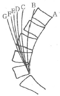
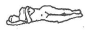
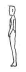
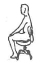
(정답률: 53%)
60. 암순응(dark adaptation)이 되어 있는 눈에 가장 둔감한 색상은?
- 백색
- 황색
- 초록색
- 보라색
(정답률: 68%)
4과목: 건축재료
61. 내산 · 내알칼리성이 우수하고 내마모성이 좋아 콘크리트 및 모르타르 바탕면 등에 사용되는 합성수지 도료는?
- 요소수지 도료
- 에폭시수지 도료
- 알키드수지 도료
- 멜라민수지 도료
(정답률: 76%)
62. 셀프레벨링재에 관한 설명으로 옳지 않은 것은?
- 석고계 셀프레벨링재는 석고, 모래, 경화지연제 및 유동화제로 구성된다.
- 시멘트계 셀프레벨링재는 포틀랜드시멘트, 모래, 분산제 및 유동화제로 구성된다.
- 석고계 셀프레벨링재는 차수성이 좋아 옥외 및 실내에서 모두 사용한다.
- 셀프레벨링재 시공 후 요철부는 연마기로 다듬고, 기포는 된비빔 석고로 보수한다.
(정답률: 72%)
63. 점토 반죽에 샤모테를 첨가하여 사용하는 경우가 있는데 이 샤모테의 사용 목적은?
- 가소성 조절용
- 용융성 조절용
- 경화시간 조절용
- 강도 조절용
(정답률: 60%)
64. 화재 시 가열에 대하여 연소되지 않고 유해한 연기나 가스를 발생하지 않는 불연재료에 해당되지 않는 것은?
- 콘크리트
- 석재
- 알루미늄
- 목모시멘트판
(정답률: 56%)
65. 골재의 함수상태에 관한 설명으로 옳지 않은 것은?
- 절대건조상태 : 대기 중에서 골재의 표면이 완전히 건조된 상태
- 습윤상태 : 골재입자의 내부에 물이 채워져 있고, 표면에도 물이 부착되어 있는 상태
- 표면건조포화상태 : 골재입자의 표면에 물은 없으나 내부의 공극에는 물이 꽉 차 있는 상태
- 공기 중 건조상태 : 실내에 방치한 경우 골재입자의 표면과 내부의 일부가 건조한 상태
(정답률: 52%)
66. 다음 중 유기질 단열재료가 아닌 것은?
- 연질 섬유판
- 세라믹 파이버
- 폴리스틸렌 폼
- 셀룰로즈 섬유판
(정답률: 60%)
67. 세라믹재료의 특성에 관한 설명으로 옳지 않은 것은?
- 내열성, 화학저항성이 우수하다.
- 내후성은 취약하나, 가공이 용이하다.
- 단단하고, 압축강도가 높다.
- 전기절연성이 있다.
(정답률: 64%)
68. 재료의 단단한 정도를 나타내는 용어는?
- 연성
- 인성
- 취성
- 경도
(정답률: 71%)
69. 점토벽돌 1종의 압축강도는 최소 얼마 이상인가?
- 17.85MPa
- 19.53MPa
- 20.59MPa
- 24.50MPa
(정답률: 49%)
70. 석고보드의 특성에 관한 설명으로 옳지 않은 것은?
- 흡수로 인해 강도가 현저하게 저하된다.
- 신축변형이 커서 균열의 위험이 크다.
- 부식이 안되고 충해를 받지 않는다.
- 단열성이 높다.
(정답률: 63%)
71. 유리의 성질에 관한 설명으로 옳지 않은 것은?
- 굴절율은 1.5~1.9 정도이고 납을 함유하면 낮아진다.
- 열전도율 및 열팽창률이 작다.
- 광선에 대한 성질은 유리의 성분, 두께, 표면의 평활도 등에 따라 다르다.
- 약한 산에는 침식되지 않지만 염산 · 황산 · 질산 등에는 서서히 침식된다.
(정답률: 48%)
72. 콘크리트 배합설계 시 물의 양을 150ℓ/m3, 시멘트의 양을 100ℓ/m3로 하였을 경우 물-시멘트비는? (단, 시멘트의 밀도는 3.14g/cm3임)
- 약 34%
- 약 48%
- 약 67%
- 약 85%
(정답률: 58%)
73. 타일 및 위생도기에 사용하는 점토제품으로 흡수성이 아주 작고 소성온도가 가장 높은 것은?
- 토기
- 도기
- 석기
- 자기
(정답률: 83%)
74. 건조 전 중량 5kg인 목재를 건조시켜 전건중량이 4kg이 되었다면 이 목재의 함수율은 몇 %인가?
- 8%
- 20%
- 25%
- 40%
(정답률: 66%)
75. 목재 또는 식물질을 절삭, 파쇄 등을 거쳐 작은 조각으로 하여 건조시킨 후 합성수지 접착제를 첨가하여 열압성형 제판한 제품으로 상판, 칸막이벽 등에 사용되는 것은?
- 파티클보드
- 집성목재
- 섬유판
- 코르크판
(정답률: 73%)
76. 방수재료 중 합성고분자루핑에 관한 설명으로 옳지 않은 것은?
- 바탕처리, 건조상태, 먼지의 부착에 따른 영향을 받는다.
- 표면이 평활하고 내수적이다.
- 자외선을 받으면 경화되어 균열이 생기는 경우가 많다.
- 열에 의한 신축변형이 작다.
(정답률: 47%)
77. 동(鋼)에 관한 설명으로 옳지 않은 것은?
- 연성이고 가공성이 풍부하여 판재, 선, 봉 등으로 만들기가 용이하다.
- 열전도율 및 전기전도율아 매우 크다.
- 염수 또는 해수에 침식되지 않는다.
- 콘크리트 등 알칼리에 접하는 장소에서는 빨리 부식된다.
(정답률: 78%)
78. 강의 열처리 방법에 속하지 않는 것은?
- 불림
- 풀림
- 단조
- 담금질
(정답률: 69%)
79. 목재제품 중 합판에 관한 설명으로 옳지 않은 것은?
- 함수율 변화에 따른 팽창 ㆍ 수축의 방향성이 없다.
- 뒤틀림이나 변형이 적은 비교적 큰 면적의 평면재료를 얻을 수 있다.
- 단판을 섬유방향이 서로 직교되도록 적층하면서 접착제로 접착하여 합친 판이다
- 합판 제작에 사용되는 단판의 매수는 일반적으로 2겹, 4겹, 6겹 등 짝수 매수로 한다.
(정답률: 70%)
80. 방수재료 중 아스팔트방수층을 시공할 때 제일 먼저 사용되는 재료는?
- 아스팔트
- 아스팔트 프라이머
- 아스팔트 루핑
- 아스팔트 펠트
(정답률: 80%)
5과목: 건축일반
81. 비상용승강기를 설치하지 아니할 수 있는 건축물의 기준으로 옳지 않은 것은?
- 높이 31m를 넘는 각층의 바닥면적의 합계가 600m2 이하인 건축물
- 높이 31m를 넘는 각층을 거실외의 용도로 쓰는 건축물
- 높이 31m를 넘는 층수가 4개층 이하로서 당해 각층의 바닥면적의 합계 200m2 이내마다 방화구획으로 구획한 건축물
- 높이 31m를 넘는 층수가 4개층 이하로서 당해 각층의 바닥면적의 합계 500m2(벽 및 반자가 실내에 접하는 부분의 마감을 불연재료로 한 경우) 이내마다 방화구획으로 구획한 건축물
(정답률: 52%)
82. 건물의 외부보를 제외하고는 내부에는 보 없이 바닥판만으로 구성하고 그 하중은 직접 기둥에 전달하는 구조는?
- 플랫 슬래브
- 장선 슬래브
- 격자 슬래브
- 1방향 슬래브
(정답률: 74%)
83. 화재예방, 소방시설 설치유지 및 안전관리에 관한 법령에서 정한 ‘연소우려가 있는 구조’의 기준에 해당되지 않는 것은?
- 건축물대장의 건축물 현황도에 표시된 대지경계선 안에 둘 이상의 건축물이 있는 경우
- 각각의 건축물이 다른 건축물의 외벽으로부터 수평거리가 1층의 경우에는 6m 이하，2층 이상의 층의 경우에는 10m 이하인 경우
- 건축물의 내장재의 65% 이상이 가연물로 구성되어 있는 경우
- 개구부가 다른 건축물을 향하여 설치되어 있는 경우
(정답률: 43%)
84. 다음은 건축법 시행령 중 피난계단의 설치에 관한내용이다. 빈칸에 공통으로 들어갈 내용으로 옳은 것은?
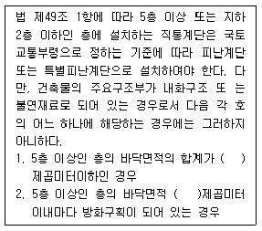
- 100
- 150
- 200
- 300
(정답률: 56%)
85. 철골구조에 관한 설명으로 옳지 않은 것은?
- 부재의 균등한 품질을 기대할 수 있다.
- 강재는 길이에 비해 두께가 얇아 좌굴을 일으킬 수 있다.
- 본질적으로 조립구조이므로 부재간의 접합에 특히 주의해야 한다.
- 내화피복을 하지 않아도 고열에도 크게 강도가 저하 되지 않으며 내구성이 보장된다.
(정답률: 67%)
86. 조선시대 건축에서 사용된 실내 장식물이 아닌 것은?
- 잡상
- 닫집
- 일월오악병
- 보개(寶蓋)
(정답률: 47%)
87. 널 옆이 서로 물려지게 혀를 내고 그 한 옆에서 못대가리가 감추어지며 마루의 진동으로 못이 솟아오르는 일이 없는 쪽매는?
- 반턱 쪽매
- 맞댄 쪽매
- 빗 쪽매
- 제혀 쪽매
(정답률: 79%)
88. 간이스프링클러설비를 설치하여야 하는 특정소방대상물의 연면적 기준으로 옳은 것은? (단, 교육연구시설 내 합숙소의 경우)
- 50m2 이상
- 100m2 이상
- 150m2 이상
- 200m2 이상
(정답률: 45%)
89. 특정소방대상물 중 교육연구시설에 해당하는 것은?
- 무도학원
- 자동차정비학원
- 자동차운전학원
- 연수원
(정답률: 76%)
90. 판테온(Pantheon)에 나타난 디자인의 특징이 아닌 것은?
- 그리스 헬레니즘의 영향이 남아있다.
- 완전수라 여겨지던 6을 디자인의 출발점으로 삼았다.
- 벽화나 그림을 제외한 실내 공간의 골격은 대칭으로 구성되었다
- 원과 정사각형을 도형적 기초로 삼았다.
(정답률: 59%)
91. 의료시설의 병실 간 경계벽을 설치함에 있어 소리를 차단하는데 장애가 되는 부분이 없도록 하기 위한 구조 기준 내용으로 옳지 않은 것은?
- 철근콘크리트조로서 두께가 10cm 이상인 것
- 벽돌조로서 두께가 19cm 이상인 것
- 석조로서 두께가 19cm 이상인 것
- 콘크리트블록조로서 두께가 19cm 이상인 것
(정답률: 45%)
92. ‘소방특별조사의 연기사유’가 될 수 없는 것은?
- 태풍, 홍수 등 재난이 발생하여 소방대상물을 관리하기가 매우 어려운 경우
- 관계인이 질병, 장기출장 등으로 소방특별조사에 참여할 수 없는 경우
- 권한 있는 기관에 자체점검기록부, 교육 · 훈련일지 등 소방특별조사에 필요한 장부 · 서류 등이 압수되거나 영치되어 있는 경우
- 소방본부장 또는 소방서장으로부터 피난시설, 방화구획 및 방화시설의 유지 · 관리에 대한 시정보완을 통보 받은 후 불가피하게 연기해야 하는 경우
(정답률: 56%)
93. 철골조의 접합에서 회전자유의 절점을 가지는 접합은 무엇인가?
- 모멘트접합
- 아크용접접합
- 핀접합
- 강접합
(정답률: 72%)
94. 6층 이상의 거실면적의 합계가 2000m2인 건축물 중 승용승강기를 가장 적게 설치할 수 있는 건축물의 용도는? (단, 15인승 승용승강기의 경우)
- 위락시설
- 문화 및 집회시설 중 공연장
- 판매시설
- 의료시설
(정답률: 40%)
95. 건축물의 피난 · 방화구조 등의 기준에 관한 규칙상 거실의 용도구분에 따른 조도기준이 잘못 연결된 것은? (단, 바닥에서 85센티미터의 높이에 있는 수평면의 조도이며, 답지항은 거실의 용도구분에서 대분류-소분류-조도의 순임)
- 집회 - 회의 - 300룩스
- 작업 –포장 · 세척 –150룩스
- 집무 - 일반사무 –300룩스
- 오락 - 오락일반 - 200룩스
(정답률: 49%)
96. 특정소방대상물의 소방안전관리업무 중 소방시설관리업의 등록을 한 자에게 그 일부를 대행하게 할 수 있는 업무는?
- 소방계획서의 작성 및 시행
- 자위소방대 및 초기대응체계의 구성 · 운영 · 교육
- 피난시설, 방화구획 및 방화시설의 유지 ㆍ 관리
- 소방훈련 및 교육
(정답률: 60%)
97. 공동 소방안전관리자 선임대상 특정소방대상물의 연면적 기준은? (단, 복합건축물의 경우)
- 2000m2 이상
- 3000m2 이상
- 5000m2 이상
- 10000m2 이상
(정답률: 28%)
98. 각 소방시설의 종류별 연결이 옳지 않은 것은?
- 소화설비 –옥내소화전설비
- 피난설비 - 자동화재속보설비
- 소화용수설비 - 소화수조
- 소화활동설비 - 제연설비
(정답률: 61%)
99. 바닥으로부터 높이 1m까지 안벽마감을 내수재료로 하여야 하는 대상이 아닌 것은?
- 제1종 근린생활시설 중 치과의원의 치료실
- 제2종 근린생활시설 중 휴게음식점의 조리장
- 제1종 근린생활시설 중 목욕장의 욕실
- 제2종 근린생활시설 중 일반음식점의 조리장
(정답률: 70%)
100. 건축물의 피난층 외의 층에서는 피난층 또는 지상으로 통하는 직통계단을 설치할 때, 거실의 각 부분으로부터 계단에 이르는 보행거리는 최대 얼마 이하가 되어야 하는가? (단, 주요구조부가 내화구조 또는 불연재료로 되어 있지 않은 경우)
- 20m
- 30m
- 40m
- 50m
(정답률: 54%)
6과목: 건축환경
101. 물의 경도는 물 속에 녹아 있는 칼슘, 마그네슘 등의 염류의 양을 무엇의 농도로 환산하여 나타낸 것인가?
- 탄산칼륨
- 탄산칼슘
- 탄산나트륨
- 탄산마그네슘
(정답률: 55%)
102. 다음과 같은 조건에 있는 벽체의 실내측 표면 온도는?
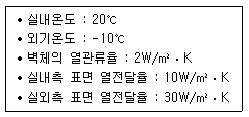
- 14℃
- 16℃
- 18℃
- 20℃
(정답률: 22%)
103. 가로 4m, 세로 6m, 높이 3m인 실내에 10명이 재실하고 있다. 필요 환기량은? (단, 1인당 CO2 발생량 0.015m3, 실내 CO2 허용농도 1000ppm, 외기 CO2 농도 400ppm이다.)
- 50m3/h
- 150m3/h
- 250m3/h
- 350m3/h
(정답률: 48%)
104. 공기조화방식 중 2중덕트 변풍량방식에 관한 설명으로 옳지 않은 것은?
- 변풍량 유닛의 설치공간이 필요하다.
- 2중덕트 정풍량방식보다 에너지 절감효과가 있다
- 외기 풍량을 많이 필요로 하는 실에는 적용할 수 없다.
- 최소풍량이 취출되어도 실내온도는 설정 온도 범위를 유지할 수 있다.
(정답률: 51%)
1⑤. 불쾌 글레어의 원인과 가장 거리가 먼 것은?
- 휘도가 높은 광원
- 시선 부근에 노출된 광원
- 눈에 입사하는 광속의 과다
- 물체와 그 주위 사이의 저휘도 대비
(정답률: 80%)
106. 환기에 관한 설명으로 옳지 않은 것은?
- 치환환기는 공기의 온도차에 따른 환기력을 이용한 자연환기와 함께 기계환기를 조합한 환기방식이다.
- 건물의 상부와 하부에 개구부가 있을 경우, 실내외 온도차에 의한 환기량은 두 개구부 수직거리의 제곱근에 비례한다.
- 전반환기는 실 전체의 기류분포를 고려하면서, 실내에서 발생하는 오염공기의 희석, 확산, 배출이 이루어지도록 하는 환기방식이다.
- 건물의 실내온도가 외기온도보다 높고, 실외에 바람이 없을 경우, 외기는 건물 상부의 개구부로 들어오고, 건물 하부의 개구부로 나가면서 환기가 이루어진다.
(정답률: 63%)
107. 다음 설명에 알맞은 환기방식은?
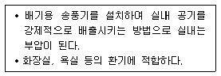
- 제1종 환기
- 제2종 환기
- 제3종 환기
- 제4종 환기
(정답률: 65%)
108. 건축물의 단열계획에 관한 설명으로 옳지 않은 것은?
- 외피의 모서리 부분은 열교가 발생하지 않도록 단열재를 연속적으로 설치한다.
- 외벽 부위는 내단열로 시공하는 것이 외단열로 시공하는 것보다 단열에 효과적이다.
- 건물의 창 및 문은 가능한 작게 설계하고, 특히 열손실이 많은 북측 거실의 창 및 문의 면적은 최소화한다.
- 발코니 확장을 하는 공동주택이나 창 및 문의 면적이 큰 건물에는 단열성이 우수한 로이(Low-E) 복층창이나 삼중창 이상의 단열성능을 갖는 창을 설치한다.
(정답률: 67%)
109. 음의 고저 감각과 직접적인 관계가 있는 요소는?
- 파형
- 진폭
- 잔향
- 주파수
(정답률: 54%)
110. 급수방식에 관한 설명으로 옳지 않은 것은?
- 고가수조방식은 일반적으로 하향급수 배관 방식이 사용된다.
- 압력수조방식은 급수압력의 변화가 심하고 취급이 까다롭다.
- 수도직결방식은 급수압력의 변동이 없어 일정한 수압으로 급수가 가능하다.
- 펌프직송방식은 펌프운전방식에 따라 정속 방식과 변속방식으로 분류할 수 있다.
(정답률: 50%)
111. 벽체의 표면결로 방지대책으로 옳지 않은 것은?
- 실내에서 발생하는 수증기를 억제한다.
- 기밀에 의해 실내 절대습도를 상승시킨다.
- 단열강화에 의해 실내측 표면온도를 상승시킨다.
- 직접가열이나 기류촉진에 의해 표면온도를 상승시킨다.
(정답률: 67%)
112. 인체의 열적 쾌적감에 영향을 미치는 물리적 온열 4요소에 속하지 않는 것은?
- 기류
- 기온
- 복사열
- 공기의 청정도
(정답률: 76%)
113. 전기설비에서 다음과 같이 정의되는 것은?
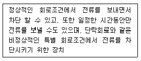
- 단로스위치
- 절환스위치
- 누전차단기
- 과전류차단기
(정답률: 59%)
114. 조명설비의 광원에 관한 설명으로 옳지 않은 것은?
- 형광램프는 점등장치를 필요로 한다.
- 고압나트륨램프는 할로겐전구에 비해 연색성이 좋다.
- 고압수은램프는 광속이 큰 것과 수명이 긴 것이 특징이다.
- LED램프는 수명이 길고 소비전력이 작다는 장점이 있다.
(정답률: 75%)
115. 작업구역에는 전용의 국부조명방식으로 조명하고, 기타 주변 환경에 대하여는 간접조명과 같은 낮은 조도 레벨로 조명하는 방식은?
- TAL조명방식
- LED조명방식
- 전반조명방식
- 건축화조명방식
(정답률: 64%)
116. 일조의 직접적 효과에 속하지 않는 것은?
- 광 효과
- 열 효과
- 환기 효과
- 보건 ㆍ 위생적 효과
(정답률: 71%)
117. 직접조명에 관한 설명으로 옳지 않은 것은?
- 조명률이 높다.
- 실내면 반사율의 영향이 적다.
- 분위기를 중시하는 조명에 적합하다.
- 국부적으로 고조도를 얻기 편리하다.
(정답률: 70%)
118. 다음 설명에 알맞은 대변기의 세정방식은?
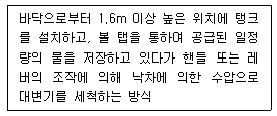
- 세출식
- 세락식
- 로 탱크식
- 하이 탱크식
(정답률: 74%)
119. 다음 중 일반적으로 요구되는 최적잔향시간이 가장 짧은 곳은?
- 콘서트 홀
- 가톨릭 교회
- TV 스튜디오
- 오페라 하우스
(정답률: 78%)
120. 다음 중 차음재료에 요구되는 성질과 가장 거리가 먼 것은?
- 공기의 유통이 없이 비교적 밀실한 재질을 지니고 있다.
- 공기 중을 전파하는 음파의 차단에 관하여 특질을 갖추고 있다.
- 연속기포 다공질 재료로서 공기 중을 전파하여 입사한 음파의 투과가 용이하다.
- 실용적으로 사용하기 편리한 재료이고, 차음의 목적에 따라 천장, 벽, 바닥 등의 구성재료가 될 수 있다.
(정답률: 63%)